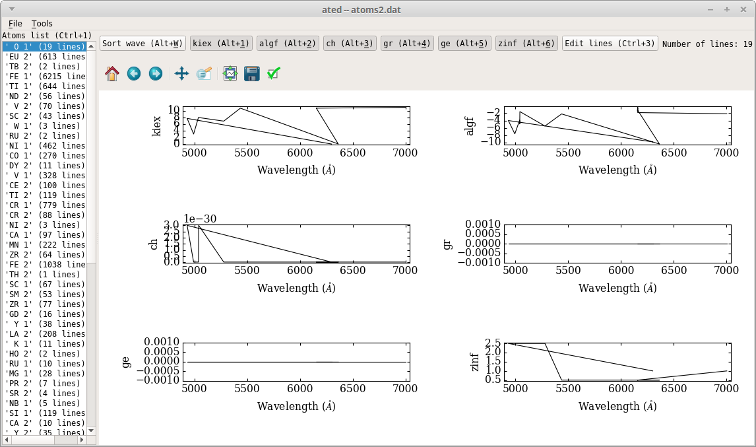

Quickstart¶
Command-line operation¶
Aims for this tutorial:
- calculate a synthetic spectrum;
- convolve with Gaussian functions of varying full-width-at-half-maximum (FWHM);
- visualize results.
Short story¶
Here is the full command sequence:
mkdir mystar
cd mystar
copy-star.py
link.py
run4.py
plot-spectra.py --ovl flux.norm flux.norm.nulbad.0.120
Note
If you choose star “Mu-Leo”, run run4.py --allow true to bypass the fact that its
metallicity if outside the atmospheric model grid provided
Long story¶
Create a new directory¶
mkdir mystar
cd mystar
Gather input data¶
Input data consists of:
stellar parameters (temperature, chemical abundances etc.) and running settings
(e.g., calculation wavelength interval);
star-independent physical data: line lists, atmospheric model grid, partition
functions etc. that are less likely to be modified. We refer to these as “common” data.
Stellar data and running settings¶
The following displays a menu allowing you to choose among a few stars:
copy-star.py
After running this, the following files will be copied into the mystar directory:
- main.dat: main configuration (editable with
mained.py,x.py) - abonds.dat: chemical abundances (editable with
abed.py,x.py)
Common data¶
the files are big | and/or unlikely to change:
link.py
The following links that should appear in your directory now:
- absoru2.dat
- atoms.dat
- grid.moo
- hmap.dat
- molecules.dat
- partit.dat
Spectral synthesis pipeline¶
+-------------------+ +----------------+ +-----------+ +----------+
| innewmarcs | | hydro2 | | pfant | | nulbad |
| ========== | | ====== | | ===== | | ====== |
| interpolate the | | create | | calculate | | convolve |
| atmospheric |-->| hydrogen lines |-->| synthetic |-->| with |
| model | | profiles | | spectrum | | Gaussian |
+-------------------+ +----------------+ +-----------+ +----------+
Figure 2 - PFANT spectral synthesis pipeline showing the Fortran program names and what they do.
Interpolate the stellar atmospheric model¶
This step takes a 3D grid of atmospheric models (usually a file named grid.mod) and interpolates a new model given a certain point (temperature, gravity, metallicity) (specified in the main configuration file) contained within the limits of the grid.
innewmarcs
will create two files: modeles.mod and modeles.opa.
Note
If the combination of (temperature, gravity, metallicity) is outside the limits of the
grid, innewmarcs will refuse to interpolate. However, it can be forced to use the
nearest points in the grid with command-line option --allow T.
Create hydrogen lines profiles¶
hydro2
will create files such as: thalpha (Figure 8), thbeta, thgamma etc.
Calculate synthetic spectrum¶
pfant
creates files flux.norm, flux.spec, flux.cont, respectively: normalized, un-normalized, continuum spectrum.
To visualize these files:
plot-spectra.py flux.spec flux.cont flux.norm
will open a plot window (Figure 3).
Figure 3 – plots of three files generated by pfant.
Convolve synthetic spectrum with Gaussian function¶
and convolve it | with a Gaussian function of FWHM=0.12 :
nulbad
creates file flux.norm.nulbad.0.120
Note
You can change the FWHM using option --fwhm
Plot spectra¶
plot-spectra.py --ovl flux.norm flux.norm.nulbad.0.120
opens a plot window where one can see how the spectrum looks before and after the convolution (Figure 4).
Figure 4 – plot comparing spectra without and after convolution with Gaussian function (FWHM=0.12).
Where you can find more information¶
- Description of stellar parameters, running settings,
command-line options: run
x.pyand navigate through the fields in Tabs 1 and 3. As you navigate, a description of the current field will be displayed at the bottom of the window. - Call a program with “–help” option, e.g.,
pfant --help. - TODO other *README.md* files can be found in other PFANT subdirectories.
programs.pylists all Fortran/Python programs.- The Fortran source code
- TODO Also check the pyfant tutorial(s) at
Graphical interface operation¶
Spectral Synthesis from Scratch¶
Shell commands:
mkdir mystar
cd mystar
copy-star.py
link.py common
x.py
The last command will invoke the PFANT Launcher (Figure 5):
- Change parameters in Tab 1/2/3 (Tab 4 is a different story)
- Click on the “Submit single job” button: a new window named “Runnables Manager” opens
- When the “Status” column shows “nulbad finished”, double-click on the table item: “PFANT Explorer” window opens
- Double-click on “flux.norm”: turns green (if wasn’t so)
- Double-click on “Plot spectrum”: spectrum appears


Figure 5 – Screenshots of the x.py application
Edit stellar parameters and abundances¶
Browse files with F311 Explorer¶
explorer.py

This application allows you to navigate through your file system and visualize/edit files of various files, including spectra and most files used by PFANT. A list with all supported file types is available here
You can select several spectral files and plot them all at once (stacked in different sub-plots, or overlapped in a single plot).
Edit Atomic Lines file¶
First make a copy of file “atoms.dat” to leave the current one untouched.
copy atoms.dat atoms2.dat
Now open the Atomic Lines Editor
ated.py atoms2.dat

Edit Molecular Lines file¶
First make a copy of file “molecules.dat” to leave the current one untouched.
copy molecules.dat molecules2.dat
Now open the Molecular Lines Editor
mled.py molecules2.dat

List all applications avaiable from the f311 Python project¶
Most of the applications from project f311 were created to target needs from PFANT users or
people working with spectral synthesis. Here is a list of these applications obtained using
programs.py in 16/Feb/2017:
$ programs.py
Package 'aosss'
===============
Graphical applications
----------------------
wavelength-chart.py ......... Draws chart showing spectral lines of
interest, spectrograph wavelength ranges, ESO
atmospheric model, etc.
Command-line tools
------------------
create-simulation-reports.py Creates HTML reports from WebSim-COMPASS
output files
create-spectrum-lists.py .... Create several .splist (spectrum list) files
from WebSim-COMPASS output files; groups
spectra that share same wavelength vector
get-compass.py .............. Downloads WebSim-COMPASS simulations
list-mosaic-modes.py ........ Lists MOSAIC Spectrograph modes
organize-directory.py ....... Organizes simulation directory (creates
folders, moves files, creates 'index.html')
Package 'convmol'
=================
Graphical applications
----------------------
convmol.py ........ Conversion of molecular lines data to PFANT format
Command-line tools
------------------
download-hitran.py Downloads molecular lines from HITRAN database
print-nist.py ..... Downloads and prints molecular constants from NIST Web
Book for a particular molecule
Package 'explorer'
==================
Graphical applications
----------------------
abed.py .......... Abundances file editor
ated.py .......... Atomic lines file editor
cubeed.py ........ Data Cube Editor, import/export WebSim-COMPASS data cubes
explorer.py ...... F311 Explorer -- list, visualize, and edit data files
(_à la_ File Manager)
mained.py ........ Main configuration file editor.
mled.py .......... Molecular lines file editor.
splisted.py ...... Spectrum List Editor
tune-zinf.py ..... Tunes the "zinf" parameter for each atomic line in atomic
lines file
Command-line tools
------------------
create-grid.py ... Merges several atmospheric models into a single file
(_i.e._, the "grid")
cut-atoms.py ..... Cuts atomic lines file to wavelength interval specified
cut-molecules.py . Cuts molecular lines file to wavelength interval
specified
cut-spectrum.py .. Cuts spectrum file to wavelength interval specified
plot-spectra.py .. Plots spectra on screen or creates PDF file
vald3-to-atoms.py Converts VALD3 atomic/molecular lines file to PFANT
atomic lines file.
Package 'pyfant'
================
Graphical applications
----------------------
x.py ........ PFANT Launcher -- Graphical Interface for Spectral Synthesis
Command-line tools
------------------
copy-star.py Copies stellar data files (such as main.dat, abonds.dat,
dissoc.dat) to local directory
link.py ..... Creates symbolic links to PFANT data files as an alternative
to copying these (sometimes large) files into local directory
run4.py ..... Runs the four Fortran binaries in sequence: `innewmarcs`,
`hydro2`, `pfant`, `nulbad`
save-pdf.py . Looks for files "*.norm" inside directories session-* and
saves one figure per page in a PDF file
PFANT Fortran binaries
======================
innewmarcs found
hydro2 .... found
pfant ..... found
nulbad .... found
Writing Python scripts with pyfant package¶
Running innewmarcs, hydro2, pfant, nulbad in sequence & plotting spectra¶
import f311.pyfant as pf
import f311.explorer as ex
obj = pf.Combo()
obj.run()
obj.load_result()
# Plots continuum, spectrum, normalized in three sub-plots
ex.plot_spectra([obj.result["cont"], obj.result["spec"], obj.result["norm"]])
# Plots normalized unconvolved, normalized convolved spectra overlapped
ex.plot_spectra_overlapped([obj.result["norm"], obj.result["convolved"]])

TODO for more examples, please visit .........